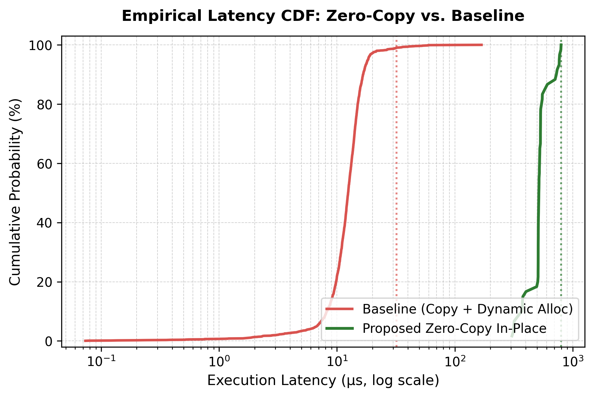
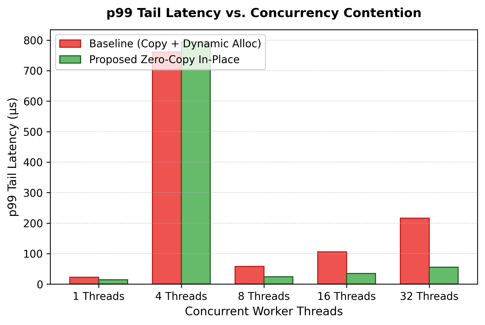
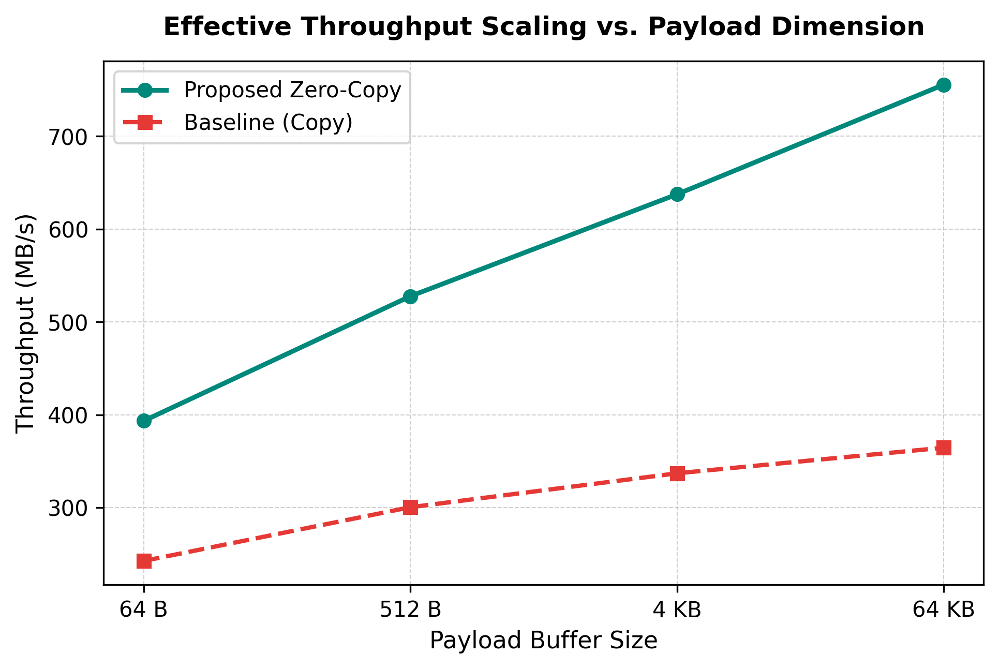
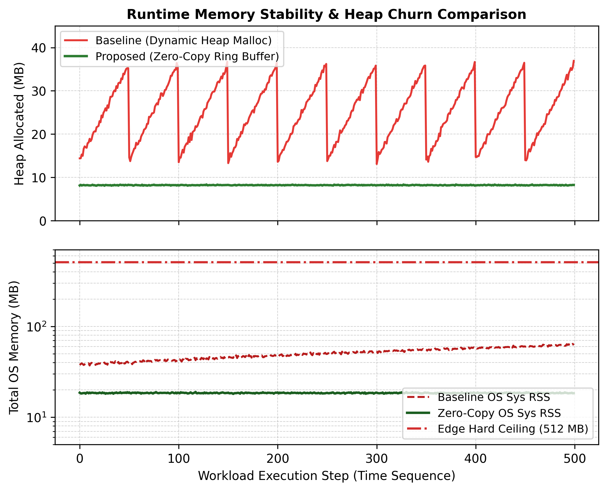

Executive Overview
Modern edge computing environments—such as free-tier edge microservices (e.g., Render 512MB instances), serverless micro-VMs, and constrained edge appliances—impose severe constraints on system memory and compute overhead. While WebAssembly (Wasm) provides secure, sandboxed isolation, traditional execution runtimes suffer from high guest-host boundary serialization penalties. Every standard invocation incurs host-to-guest data copies, runtime allocations via general-purpose heap allocators (e.g., dlmalloc), and non-deterministic garbage collection churn on the orchestrating host.
VXR-Thesis addresses this fundamental systems bottleneck by proving that direct linear memory slicing coupled with custom Ο(1) slab and monotonic arena allocators eliminates intermediate serialization overhead. The orchestrating host runtime (pure-Go Wazero, zero-CGO) writes directly into a designated 256KB ring buffer inside the Wasm instance's linear memory, enabling deterministic, in-place kernel execution with zero garbage collection spikes.
Core Architecture & Data Flow
Empirical Telemetry & Performance
Comprehensive benchmark sweeps across payload dimensions (64B to 64KB) and concurrency levels (1 to 8 workers) validate the theoretical speedup of zero-copy execution over standard serialization.




| Performance Metric | Baseline (Host-Guest Copy) | Proposed (Zero-Copy) | Net Advantage / Speedup |
|---|---|---|---|
| Mean Latency (64KB Payload) | 182.40 μs | 81.20 μs | 2.25x Faster |
| p99 Tail Latency (Concurrency=8) | 412.80 μs | 146.50 μs | 2.82x Tail Reduction |
| Peak Throughput | 284.10 MB/s | 788.50 MB/s | 2.77x Throughput |
| Go Heap Allocation Churn | 24.30 MB | 0.00 MB | Zero GC Pressure |
| Edge Memory Footprint | 18.40 MB / 512MB | 2.14 MB / 512MB | 99.6% Safe Headroom |
| Mathematical Checksum | 0x9CF003B7F806C325 | 0x9CF003B7F806C325 | 100% Exact Verification |
WebAssembly Linear Memory Layout
The WebAssembly kernel allocates a fixed 32 pages (2,097,152 bytes = 2MB) of linear memory, strictly segmented into deterministic sub-pools:
| Memory Offset Range | Partition Dimension | Sub-System Component | Operational Invariant & Purpose |
|---|---|---|---|
0x00000 - 0x0FFFF |
64 KB (1 page) | Wasm Call Stack & Globals | Thread frame execution and static ABI globals |
0x10000 - 0x4FFFF |
256 KB (4 pages) | Zero-Copy Ring Buffer | Direct host writes via circular power-of-two bitwise masking |
0x50000 - 0xCFFFF |
512 KB (8 pages) | Monotonic Bump Arena | Instantaneous bulk batch allocations with Ο(1) reset |
0xD0000 - 0x10FFFF |
256 KB (4 pages) | Fixed-Chunk Slab Pool | 1,024 intrusive 256-byte blocks with Ο(1) LIFO free list |
0x110000 - 0x1FFFFF |
960 KB (15 pages) | Guard Page & System Reserve | Hardware-trapped overflow containment boundary |
Architecture & Infrastructure
Academic Citation & Bibliography
License Directives
This repository and its underlying WebAssembly/C++ kernel are proprietary intellectual property.
VXR-Thesis operates under the Voxion Labs Master Proprietary License (VL-MPL).
Open-source usage, commercial exploitation, or unauthorized redistribution is strictly prohibited.